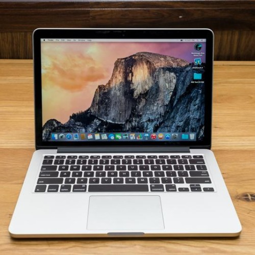
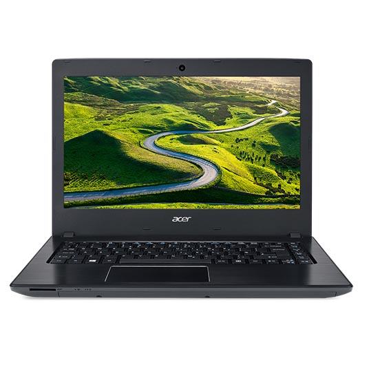
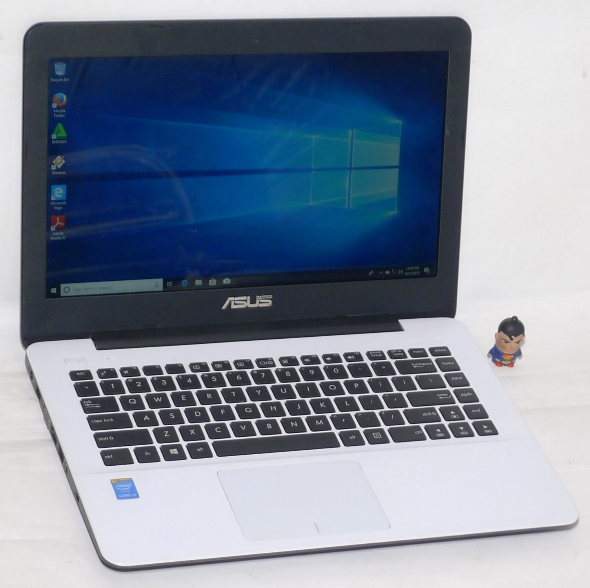
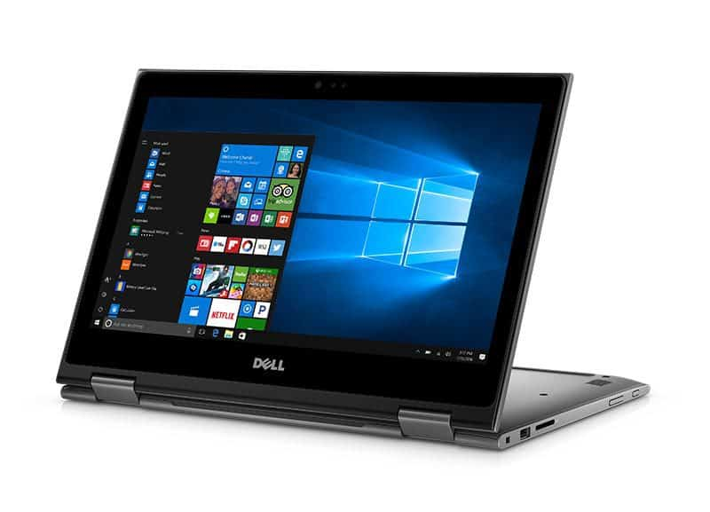

Rekomendasi Laptop Khusus Informatika
Menjadi salah satu mahasiswa teknik informatika kamu akan membutuhkan laptop. Laptop akan menjadi sahabat bagi mahasiswa Teknik Informatika sebab akan dibawa kemana saja untuk menyelesaikan berbagai macam tugas dari perkuliahan.
Sebagai anak teknik informatika kamu akan menemukan berbagai macam tugas dalam perkuliahan. Tugas tersebut tentu akan berhubungan dan membutuhkan laptop. Namun, laptop yang digunakan juga harus memiliki spesifikasi yang pas ya.
Laptop tersebut akan digunakan untuk mengerjakan tugas seperti membuat proposal, membuat laporan, melakukan editing video bahkan membuat aplikasi.
(Sumber : https://www.universitas123.com/news/rekomendasi-laptop-anak-jurusan-teknik-informatika/)
1. Macbook Pro Mf839 Retina

Laptop Macbook Pro Mf839 Retina bisa direkomendasikan bagi mahasiswa IT. Dengan prosesor Intel Core i5 dan kecepatan 2.7-3.1 GHz tentu membuat semua tugas kuliah mudah untuk diselesaikan.
Laptop ini juga memiliki VGA Intel HD6100 dan RAM 8 GB. Kapasitas RAM tersebut tentu bisa membuat kamu mendapatkan banyak aplikasi penting yang dibutuhkan. Ukuran Layar sekitar 13.3 inch Retina 256x1600. Sedangkan sistem operasi menggunakan Mac OS X (Sierra).
(Sumber : https://www.universitas123.com/news/rekomendasi-laptop-anak-jurusan-teknik-informatika/)
2. Acer Aspire E5-475G

Acer Aspire E5-475G. Memiliki prosesor Intel Core i5-7200u dan kecepatan 2.5-3.1 GHz Laptop ini bisa membantu kamu untuk bekerja semaksimal mungkin.
VGA Acer Aspire E5-475G, NVIDIA GT940MX 2GB. Namun sayangnya ukuran RAM dari Acer Aspire E5-475G hanya 4GB. Ukuran layar memang lebih besar dari rekomendasi sebelumnya, sekitar 14 inch.
(Sumber : https://www.universitas123.com/news/rekomendasi-laptop-anak-jurusan-teknik-informatika/)
3. Asus A455LA

Rekomendasi laptop berikutnya ada Asus A455LA yang juga tidak kalah bagus. Dengan processor Core i3 5005u, Asus A455LA akan membantu kamu untuk menyelesaikan berbagai macam tugas dengan kecepatan 2.0 GHz.
Intel HD Graphics untuk VGA dan RAM sekitar 4GB. Laptop ini memiliki ukuran layar 14 inci dan menggunakan sistem operasi DOS.
(Sumber : https://www.universitas123.com/news/rekomendasi-laptop-anak-jurusan-teknik-informatika/)
4. DELL INSPIRON 13-5368

DELL INSPIRON 13-5368. Laptop ini memiliki spesifikasi prosesor Intel Core i3 6100U.
Kecepatan yang dimiliki sekitar 2,3-2,8 GHz. Untuk VGA laptop menggunakan Intel HD graphics dan dengan RAM 4 GB.
Intel HD Graphics untuk VGA dan RAM sekitar 4GB. Laptop ini memiliki ukuran layar 14 inci dan menggunakan sistem operasi DOS.
(Sumber : https://www.universitas123.com/news/rekomendasi-laptop-anak-jurusan-teknik-informatika/)